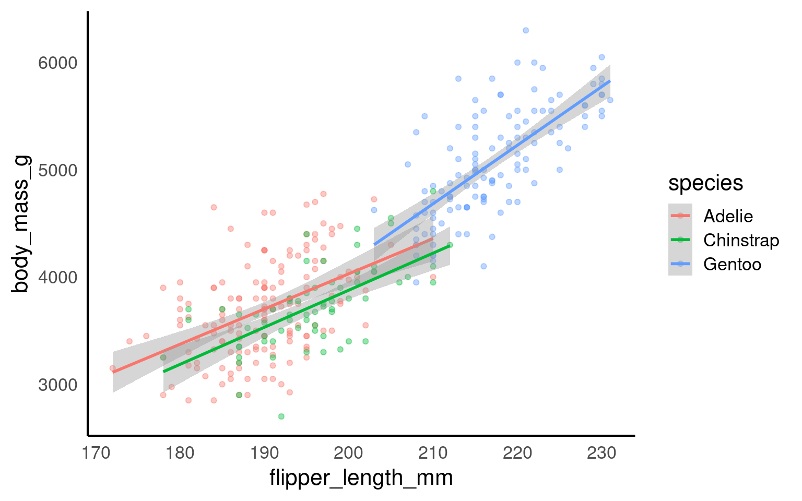
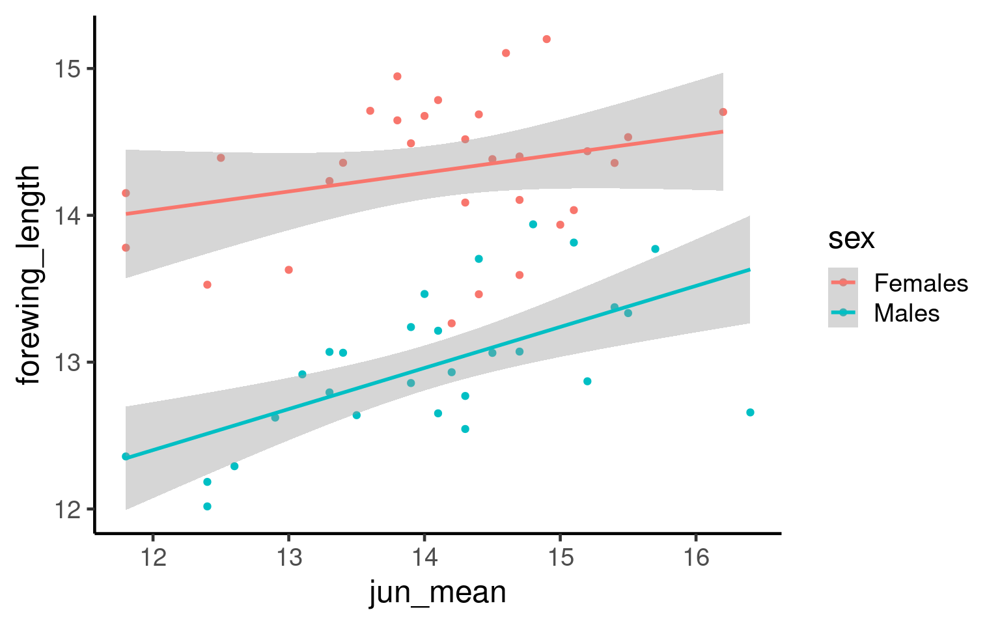

18 Visualising models
When you gather raw data, you have lots of numbers and information, but it can be hard to see the big picture. That’s where statistical models come in. Unlike descriptive statistics, which summarize your data using tools like boxplots to show medians and variability, models provide inferential statistics that help you make predictions and understand relationships beyond your immediate data.
By fitting visuals from models onto your figures, you can see these deeper patterns clearly. For example, adding a regression line to a scatter plot not only summarizes the data but also shows the trend and predicts future values. This transforms your data from simple summaries into stories that explain how variables are connected.
Models are important because they allow you to generalize findings to larger populations, test hypotheses, and make informed decisions based on evidence. While descriptive statistics tell you what is happening in your dataset, inferential statistics from models help you understand why it’s happening and what might happen next.
18.0.1 Visuals vs tables
While model summary tables provide important numbers like coefficients and p-values, visuals bring your data and models to life in several key ways:
Easy Understanding: Graphs and charts make complex information simple to grasp at a glance. For example, a regression line on a scatter plot clearly shows the relationship between variables.
Better Communication: Visuals help you share your findings with others more effectively. Pictures can convey your results quickly, even to those who aren’t familiar with the detailed statistics.
Highlight Patterns: Visuals reveal trends, outliers, and relationships that might be hidden in tables. This helps you see the bigger picture and important details simultaneously.
Check Model Fit: Graphs like residual plots let you see if your model is accurately capturing the data patterns, making it easier to spot issues.
Make It Memorable: People remember images better than numbers. Using visuals ensures your key insights stick with your audience.
In summary, while summary tables are essential for detailed analysis, visual representations make your models easier to understand, communicate, and interpret. In this class, you’ll learn to use both tables and visuals to effectively present your statistical findings.
18.0.2 Simple models
geom_smooth() in ggplot2 is a convenient way to fit simple models to your data and visualize trends in scatterplots. By default, geom_smooth() fits a loess (local regression) curve for smaller datasets, which is a flexible, non-parametric method that captures local patterns in the data. For larger datasets, or when specified, it uses a linear model (method = "lm"), which fits a straight line through the data, representing the best linear relationship between the x and y variables.
In addition to the trend line, geom_smooth() can display a confidence interval around the fitted line, showing the range in which the true trend likely lies. This interval is controlled by the se argument (set to TRUE by default)
18.0.3 Complex models
geom_smooth() can automatically fit separate regression lines for each level of a categorical variable by grouping with the color or fill aesthetic. For example, if you group by species, geom_smooth() will produce independent regressions for each species, fitting separate trend lines without considering any relationships or dependencies between groups.
However, this approach may be misleading if you’re working with an additive model or a model that includes interactions between groups, where the effect of one variable is not entirely independent of others. In additive models, variables combine to produce an overall effect, and each group’s trend should account for shared influences, not isolated patterns. Simply applying geom_smooth() would ignore these dependencies and could inaccurately suggest that each group’s trend is independent, when in fact, the groups may influence each other in important ways. For representing additive or interaction-based models, it’s better to use customized modeling and visualization techniques that accurately reflect the dependencies among variables.
18.0.3.1 Butterfly data
Year specimen collected
Forewing length (mm)
Sex of butterfly
Average June temp (celsius)
Average June rainfall (mm)
18.0.3.2 Analysis
My initial hypotheses are:
Average June temperature causes a change in forewing length
Average June Rainfall causes a change in forewing length
The average forewing length of male and female butterflies are different
Male and female butterflies respond differently to average June temperature
Can you produce a single linear model to test these hypotheses?
Call:
lm(formula = forewing_length ~ jun_mean + rain_jun + sex + jun_mean:sex,
data = butterfly_correct)
Residuals:
Min 1Q Median 3Q Max
-1.04984 -0.30796 -0.00631 0.31447 0.77349
Coefficients:
Estimate Std. Error t value Pr(>|t|)
(Intercept) 12.329062 1.127727 10.933 3.4e-15 ***
jun_mean 0.132524 0.078110 1.697 0.0956 .
rain_jun 0.001985 0.002733 0.726 0.4708
sexMales -3.551029 1.552919 -2.287 0.0262 *
jun_mean:sexMales 0.158844 0.110003 1.444 0.1546
---
Signif. codes: 0 '***' 0.001 '**' 0.01 '*' 0.05 '.' 0.1 ' ' 1
Residual standard error: 0.4423 on 53 degrees of freedom
Multiple R-squared: 0.7359, Adjusted R-squared: 0.716
F-statistic: 36.93 on 4 and 53 DF, p-value: 9.698e-1518.0.3.3 Check model fit
Once the initial model has been fitted we need to check the assumptions, try to evaluate this model
18.0.3.4 Test interaction
Can you test whether the interaction term should be kept or removed?
| Res.Df | RSS | Df | Sum of Sq | F | Pr(>F) |
|---|---|---|---|---|---|
| 54 | 10.77483 | NA | NA | NA | NA |
| 53 | 10.36697 | 1 | 0.4078532 | 2.085104 | 0.1546277 |
Call:
lm(formula = forewing_length ~ jun_mean + rain_jun + sex, data = butterfly_correct)
Residuals:
Min 1Q Median 3Q Max
-1.05660 -0.28880 -0.03925 0.29866 0.76613
Coefficients:
Estimate Std. Error t value Pr(>|t|)
(Intercept) 11.236813 0.844789 13.301 < 2e-16 ***
jun_mean 0.211121 0.056582 3.731 0.000459 ***
rain_jun 0.001658 0.002751 0.603 0.549352
sexMales -1.314933 0.117503 -11.191 1.1e-15 ***
---
Signif. codes: 0 '***' 0.001 '**' 0.01 '*' 0.05 '.' 0.1 ' ' 1
Residual standard error: 0.4467 on 54 degrees of freedom
Multiple R-squared: 0.7256, Adjusted R-squared: 0.7103
F-statistic: 47.59 on 3 and 54 DF, p-value: 3.512e-1518.0.3.5 Figures
Great now we have fitted and evaluated a model - that shows temperature and sex both affect adult forewing length. But crucially there is no evidence of an interaction effect (a differential response to temperature by sex).
If we make a figure as follow:

Q. What is the issue with the above figure?
18.0.4 Understanding emmeans and When to Estimate Trends
What is emmeans? emmeans stands for Estimated Marginal Means. It’s a tool in R used to summarize the effects of factors in your statistical model, especially when you have multiple predictors. emmeans helps you understand the average predictions from your model, adjusted for other variables.
18.0.4.1 When to Use emmeans:
Categorical Predictors: When you have factors like sex, treatment groups, or any categorical variable, emmeans can compare the average outcomes across different categories. For example, comparing the average test scores between males and females while controlling for other variables.
Continuous Predictors: When dealing with continuous variables (like age or dosage), you might want to estimate the trend or effect at specific points. Instead of just looking at the overall relationship, emmeans can provide estimated means at particular values of the continuous predictor.
18.0.4.2 When You Wouldn’t Need to Estimate a Trend:
If your model only includes categorical predictors and you’re solely interested in comparing group means without exploring trends across different levels.
When the relationship between predictors and the outcome is simple and doesn’t require detailed estimation at specific values.
Example Explained:
| sex | jun_mean | emmean | SE | df | lower.CL | upper.CL |
|---|---|---|---|---|---|---|
| Females | 11 | 13.64579 | 0.1945446 | 54 | 13.25575 | 14.03583 |
| Males | 11 | 12.33086 | 0.1914950 | 54 | 11.94694 | 12.71478 |
| Females | 12 | 13.85691 | 0.1451276 | 54 | 13.56595 | 14.14788 |
| Males | 12 | 12.54198 | 0.1429034 | 54 | 12.25548 | 12.82849 |
| Females | 13 | 14.06804 | 0.1033417 | 54 | 13.86085 | 14.27522 |
| Males | 13 | 12.75310 | 0.1028373 | 54 | 12.54693 | 12.95928 |
| Females | 14 | 14.27916 | 0.0818538 | 54 | 14.11505 | 14.44326 |
| Males | 14 | 12.96422 | 0.0844551 | 54 | 12.79490 | 13.13355 |
| Females | 15 | 14.49028 | 0.0955178 | 54 | 14.29878 | 14.68178 |
| Males | 15 | 13.17535 | 0.1004634 | 54 | 12.97393 | 13.37676 |
| Females | 16 | 14.70140 | 0.1339788 | 54 | 14.43279 | 14.97001 |
| Males | 16 | 13.38647 | 0.1394854 | 54 | 13.10682 | 13.66612 |
| Females | 17 | 14.91252 | 0.1821538 | 54 | 14.54732 | 15.27772 |
| Males | 17 | 13.59759 | 0.1876766 | 54 | 13.22132 | 13.97386 |
model_2: Your fitted statistical model.
specs = ~ sex + jun_mean: You want to estimate the means for each combination of sex (a categorical predictor) and jun_mean (a continuous predictor).
at = list(jun_mean = seq(11,17,1)): You’re specifying that you want to estimate the means at jun_mean values from 11 to 17 in steps of 1.
Continuous Predictor (jun_mean): You’re interested in how the outcome changes as jun_mean increases from 11 to 17. Estimating at these specific points allows you to see the trend or pattern in the relationship.
Categorical Predictor (sex): You want to see the average outcome for each sex category at each specified jun_mean value.
Now we fit the estimated means from our evaluated model producing a more accurate representation of our findings:
19 Refining Plots for Publication Standard
19.1 Background
In scientific publications, a plot must be both aesthetically pleasing and scientifically informative. Clear, readable visuals are essential to ensure that the message in your data is conveyed effectively to readers. Refining a plot for publication involves careful attention to scaling, labeling, and annotation, all of which help make data more accessible and the figure easier to interpret. Good design elements—like clean axes, appropriate scaling, minimal but helpful gridlines, and informative captions—allow readers to focus on the data rather than unnecessary elements.
This section covers the core principles of refining plots for publication standards, ensuring they are clean, well-labeled, and capable of standing alone within a scientific paper.
19.1.1 Best Practices for Publication-Ready Plots
-
Clarity and Simplicity:
Focus on simplicity and remove unnecessary elements that don’t convey useful information. Every component of the graph should serve a purpose, supporting the main message.
Avoid decorative effects (such as 3D elements) that detract from readability and clarity.
-
Effective Use of Color:
Use color thoughtfully, as it can quickly communicate information but also mislead or confuse if overused. Limit color to highlight key distinctions.
Ensure accessibility by choosing colorblind-friendly palettes and testing for readability in grayscale if necessary.
-
Choosing the Right Graph Type:
Select the graph type that best represents your data and message. Scatterplots, line graphs, bar charts, and box plots each have strengths for specific data types and questions.
Avoid using overly complex or unusual graph types that may be difficult for readers to interpret without adding value.
-
Clear and Descriptive Labels:
Use self-explanatory axis labels that include units (e.g., “Body Size (cm)”).
Avoid abbreviations where possible, unless they are universally understood in your field.
-
Use of axes:
Ensure that axes use the correct scale (e.g., linear, log, or custom) to represent the data accurately.
Avoid unnecessary distortion—choose scales that highlight the data patterns without exaggeration.
Ensure that axis limits and intervals are set to show data clearly, without truncating or misrepresenting information.
Order categories along an axis to aid readability
-
Minimalist Themes:
Use minimal gridlines to guide the eye without overwhelming the data.
Use grids vertical and horizontal gridlines for scatterplots
Use only horizontal (or no gridlines) when you have a categorical x-axis
Avoid distracting backgrounds or decorative elements.
Opt for
theme_minimal()ortheme_classic()inggplot2, which offer a clean, professional look. -
Annotations:
Add annotations to highlight important points, trends, or outliers in the data.
Use concise text and arrows or markers to draw attention to specific aspects without cluttering the plot.
-
Informative Captions:
Write a detailed caption that summarizes the plot’s main insights and context.
The caption should make the figure understandable without requiring additional context from the text.
-
Consistency Across Figures:
Maintain a consistent style across figures in terms of font, size, color, and design to create a cohesive look throughout a publication.
This consistency makes figures easier to compare and keeps readers focused on the data.
19.2 Task: Take the unvoltine butterfly figure and make it publication ready by following the tips above
- When you have made your best effort figure save it and submit it as this week’s assignment.
19.3 Saving
One of the easiest ways to save a figure you have made is with the ggsave() function. By default it will save the last plot you made on the screen.
If have assigned the plot to an R object, then you can also provide this as the first argument for ggsave() in order to save a particular plot
You should specify the output path to your figures folder, then provide a file name. Here I have decided to call my plot plot (imaginative!) and I want to save it as a .PNG image file. I can also specify the resolution (dpi 300 is good enough for most computer screens).
19.4 Further Reading, Guides and tips on data visualisation
Check out Chapter 19 for extra data visualisation resources
Fundamentals of Data Visualization: this book tells you everything you need to know about presenting your figures for accessbility and clarity
Beautiful Plotting in R: an incredibly handy ggplot guide for how to build and improve your figures
*Why Scientist’s need to be better at Data Visualisation
- The ggplot2 book: the original Hadley Wickham book on ggplot2